摘要: 版面构成中的情趣，通常是指形式美的情境，对所传播的信息起到画龙点睛的传神作用，使其更加吸引人、打动人。
版面设计就是在有限的版面空间里，将文字字体、图片图形、线条线框和颜色色块等诸多因素进行组合排列，它是一种直觉性、创造性的活动。在这一创造性的活动中，设计师的排版理念起着非常重要的作用，他就如同一场晚会中的总导演，将所有的文字、色彩、图形等视觉元素进行艺术的编排与组合，使画面变成有张有弛、层次分明、生动有趣、引人入胜的大舞台，给人以长久美好的记忆。
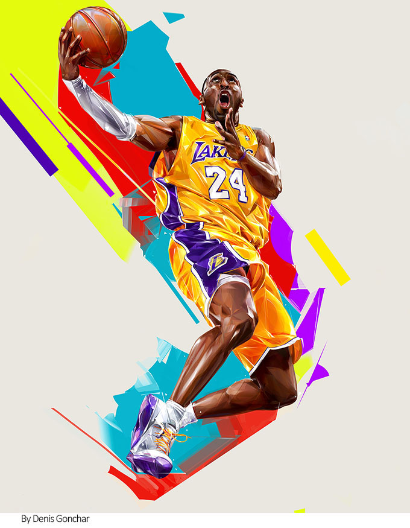
版面设计已不再是一种单纯的技术编排,而是通过视觉化、形象化的设计创造涵盖理念与感觉、主观与客观、秩序与超越、效果与功能等因素的审美活动。版面设计作用与现代广告、招贴、书籍、包装、网页等文化和商业产品,为媒体传播功能提供了不可取代的附加值。它的风格、形式、方法、理念随时代的发展而不断地产生变化，现代版面设计的特点打破了不同人群间的语言隔阂，用简单明晰的字体、图形和符号，共同构筑版面设计的新格局、新概念，从而极大地增强了编排作品的视觉感染力。
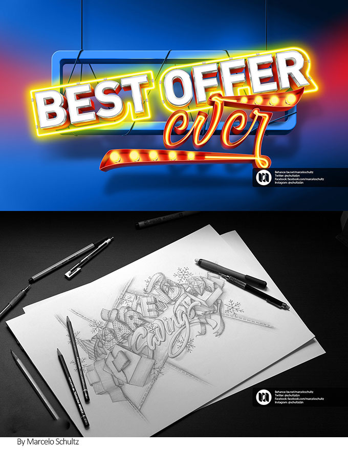
版面构成中的情趣，通常是指形式美的情境。版面充满趣味性，会对所传播的信息起到画龙点睛的传神作用，使其更加吸引人、打动人。
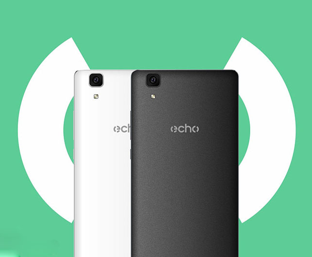
文字的视觉情趣
文字在版面编排中是一种实实在在的元素，在不同的编排类别中，文字的编排方式和承担的任务各不相同。在以文字为主体的设计题材中，它通常以段落的形式出现，由此可纪录大量信息，并且由于段落的规整外框和明朗的空间秩序，传递的信息一目了然。在文字较少的版面，它以标题、说明文、页码等形式出现，零星分布于不同的地方用以活跃气氛。文字除了具有其他元素所共有的视觉形象语言外，更是信息内容的承载体。在版面中的文字，已不仅仅局限于信息传达上的意义，而更具有一种时尚艺术的表现意味。 推荐阅读：版式设计技巧！论图文排版的基本形式
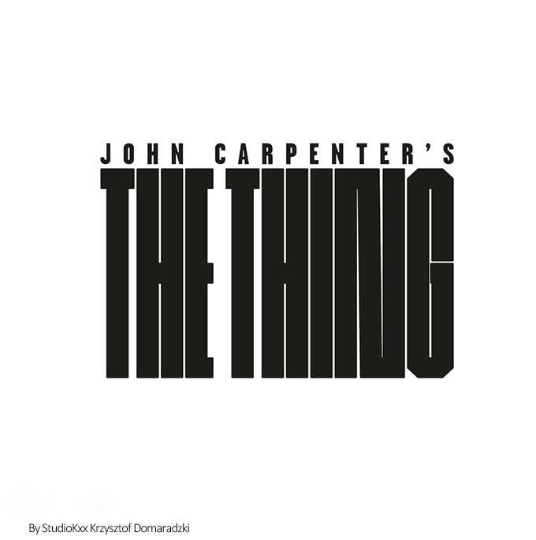
字体的个性感
每种文字都有自己的个性,宋体、黑体、楷体、等线体、圆黑体等字体是标准的基础字体，虽然普通却经久耐看，通常内文都使用这些字体。对于每一种字体的挑选，一定要根据版面传达的内容和精神进行对照选择，要加深对字体的理解，总的原则就是不要乱用，要有切实可行的道理，当然关键还是要有视觉美感。 在排版设计中，通常选择两到三种字体为宜，否则会显得凌乱而缺乏整体效果。通过文字与图形化的文字编排，创造出幽默有趣、风格独特的形式，给版面注入深刻的内涵与丰富的情趣。
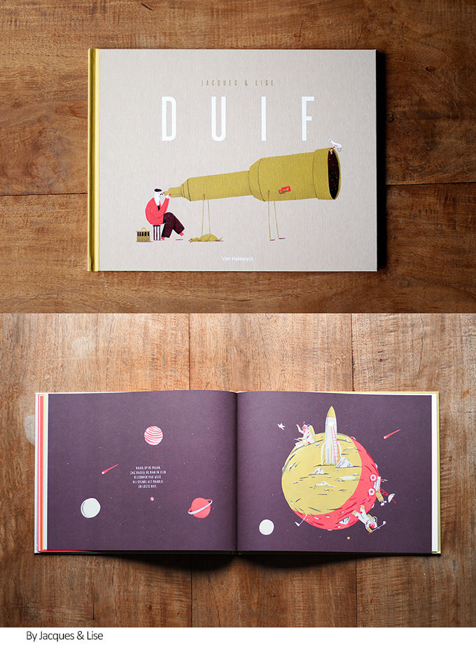
标题文字的视觉处理
标题文字首先要根据主要内容选择字体,可以直接选择印刷字体及它们的变体，也可以设计出合适的个性字体。另外，字体的大小是关系到版面整体效果的第二重要因素，它直接影响版面空间的平衡和美感，在杂志、广告等版面编排中，标题文字可以变化万千，既可以将标题作居中、横向、竖向、置边、叠印等处理，也可以直接插到正文中，与图片巧妙地结合到一起,使标题和版面妙趣横生、生动活泼。
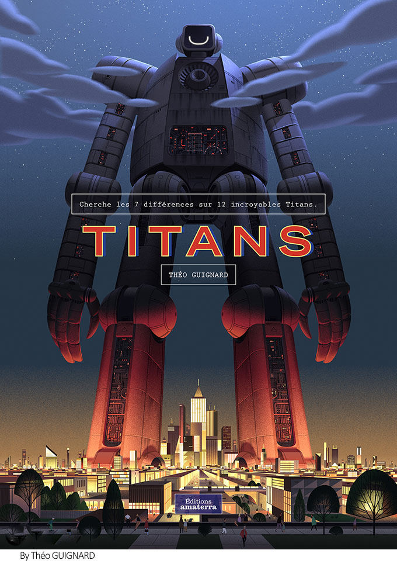
精心处理过的文字版面完全称得上效果很好的视觉传达图形，因此，文字设计是一种提高视觉传达效果、增强作品的诉求力、赋予版面审美趣味的重要构成技术。
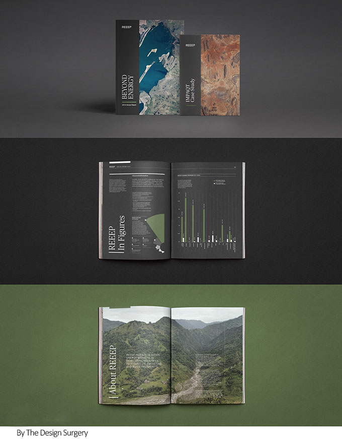
图形构成的情趣所在
图形构成是平面设计中的重要一环，在节奏快、信息量大的现代社会中，图形的直观性可以让人一目了然地获取信息，是一种直接、易识别和记忆的信息载体。图形具备集点、线、面于一体的视觉特点，相对于文字和其他视觉元素来说，更具有视觉冲击力。作为一种非文字符号，图形是符合人们视觉审美习惯的语言，它可以不受文化、语言、地域等条件的限制而被人们所识别，是十分适合传达信息的世界性通用语言。
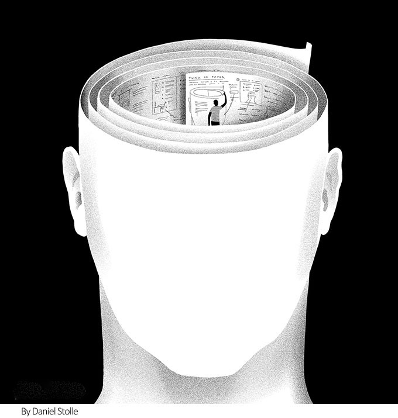
视觉感受中的图形位置、面积与数量
图形在版面编排上以点、线、面的方式组合，它们的位置、面积、数量决定了版面的层次和传达的效果。在符合视觉形式美的原则、达到良好的视觉传达效果的前提下，图形在版面上放置的位置可以不受任何局限。图片面积大小的对比也能使版面形成跳跃起伏的格局，如果图片的大小均衡，就能够体现稳定的效果。版面中图片的多少会影响到读者的兴趣，适量的图片可以让版面语言丰富多样，从而打破文字的单一沉闷格局。
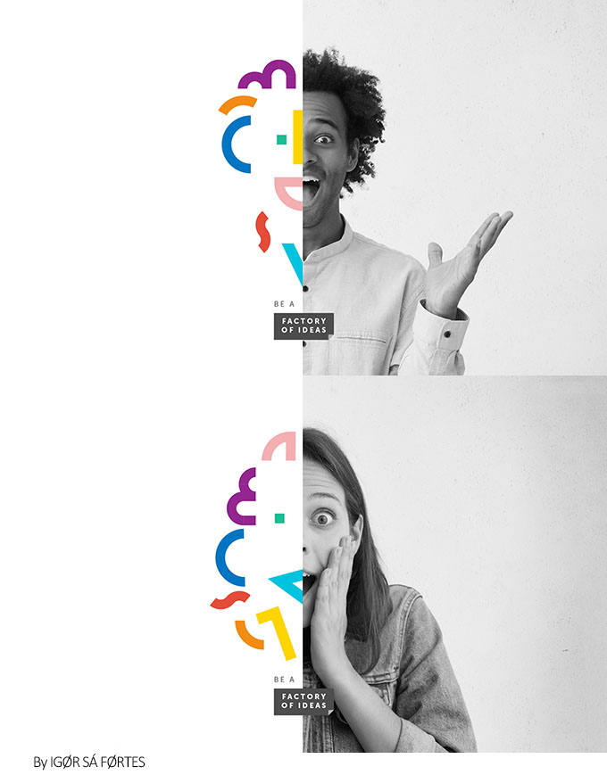
手绘的视觉表达
手绘包括手绘的插图、艺术作品等，手绘一般用来表现一些理想化、艺术化的对象，如卡通插画、科幻插画、装饰性插画、效果图等。手绘运用在版面编排上，给人以艺术化和个性化的感觉。
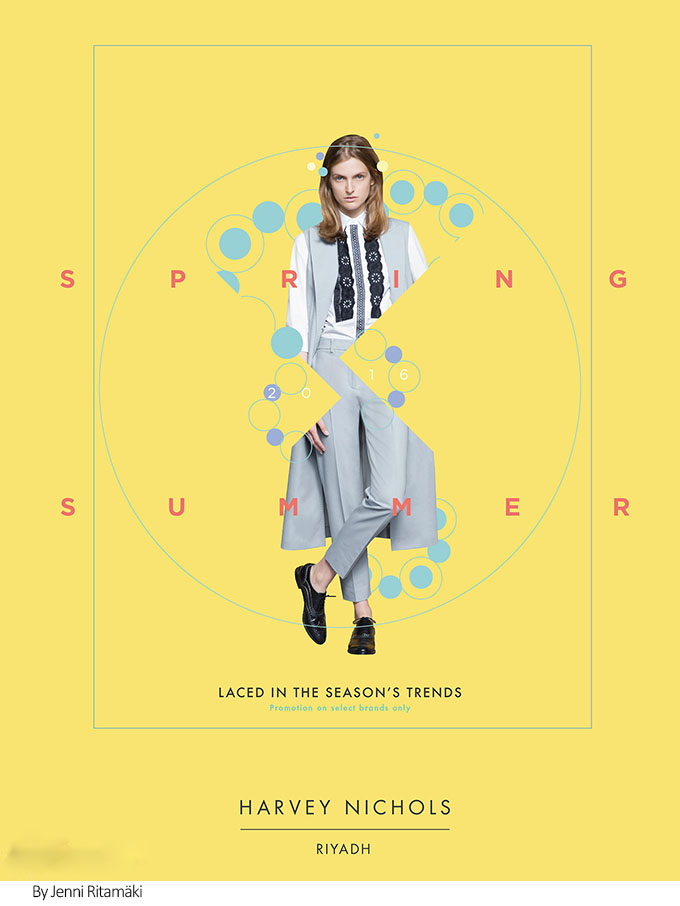
数码影像图的视觉表达
数码影像图包括数码相片、合成图像等，数码相片属于具体图形,细腻、逼真、生动、直观是具象图形的特点,它在众多的视觉形式中具有传播上的优势，逼真的数码相片运用在版面编排上更着重客观性和商业性的展示与宣传效果。经过电脑处理的数码图像则具有艺术感和现代感，在创作过程中赋予了图像深刻的理念和内涵，不仅是一种纯视觉观念和构成因素，也体现了“意在形中”的效果，数码图像将主观、感性的图形与客观、真实的图片相融合,使图形具有信息传达的功能和强烈的冲击力。
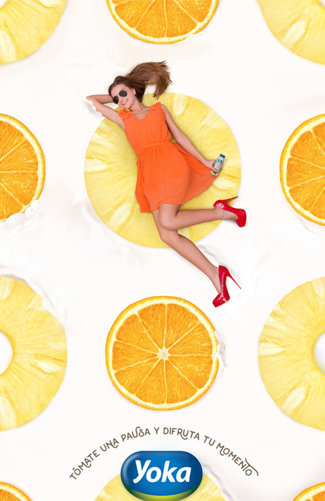
情趣感的视觉元素
视觉元素包括标点、意象符号、饰边和色块等抽象图形。抽象图形是视觉语言的符号化，具有简洁的特点，这是与具象符号相对立的另一个极端，也是现代设计的主要潮流。抽象符号表现形式多种多样，不同的材质、色彩、空间和面积对比形成不同的视觉形象。
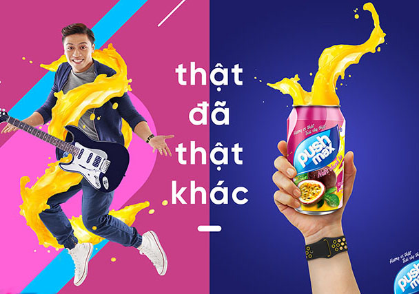
版面编排也可以脱离文字和图像，单独以图形语言来构成丰富的层次和视觉效果，通过设计师独特的想象力、创造力，以超现实的构造方法，在版面编排中构建出图形无穷的生命力。图形具有简洁、夸张、具象、抽象、符号、文字性的视觉特点，是言简意赅的元素，合理的运用其各种特点会产生意想不到的效果。借用夸张的方法，可以将对象的某一特征夸大，使对象的特点更加突出,充满意趣、值得玩味。
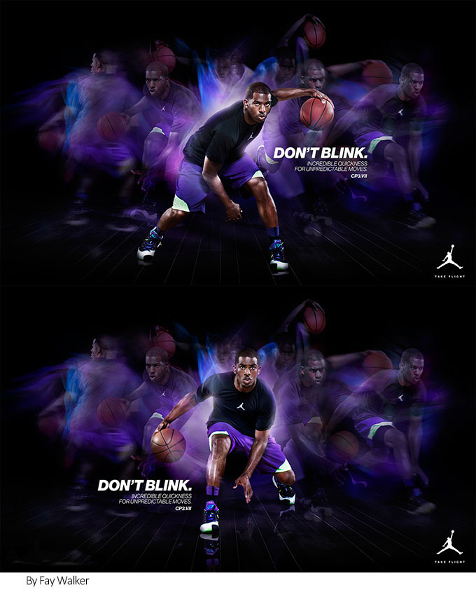
另外，图形语言也可以从光、色、形等方面，通过空白、错位、色彩对比、强调光影色调、叠加等个性化视觉元素来构成版面。 版式设计是一种艺术的创作过程，非常注重虚与实的布置。
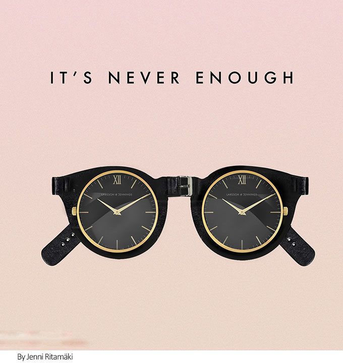
虚要空灵
空白在版式设计中非常重要,空白却不空洞，要“此地无字胜有字”。空白的位置、大小、形状方面要讲美感，必须根据内容使空白产生妙境，虚不等于空，不是一无所有，而是实境的有效延伸，是从实境中引发出来的独特审美心态。在版式设计中，虚应有层次感，要将实的东西虚化，使其虚得有意味，能与整体合拍。 推荐阅读：版式设计技巧！负空间的运用
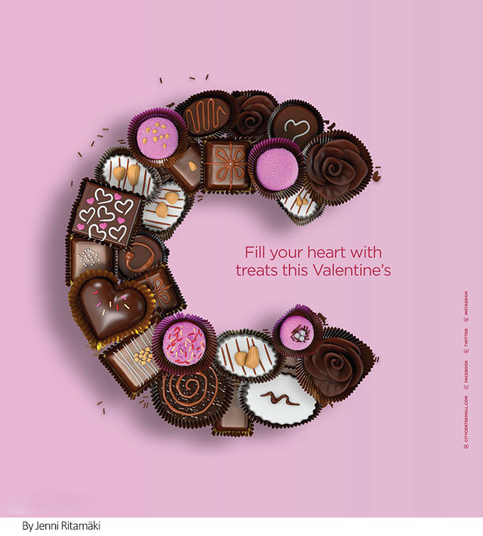
虚的节奏感
没有节奏美便没有音乐般的韵律美，没有节奏美也不能产生绘画和设计艺术。设计中节奏感因大小、多少、长短、疏密等因素的变化而产生，版式疏密对比的美必须有聚有散、疏可走马、密不透风，由此形成虚实的节奏感。 虚实结合，才能使得设计作品如传统绘画般神韵雅逸，灵动深远，境发象外，趣味尽在其中。
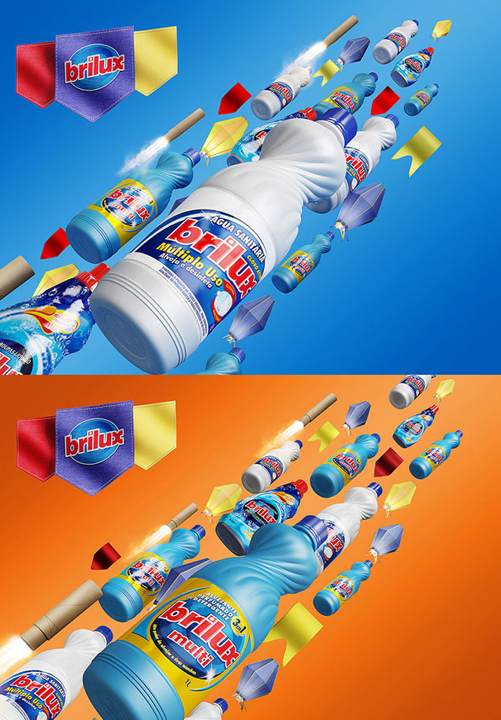
当今时代版面设计的视觉表现形式正在朝着艺术性、娱乐性、亲切性的方向发展，以往千篇一律的硬性说教、只关注合理性的版面形式逐渐被取代，已发展为对新情趣、新感觉的追求。版面设计使得设计作品更加具有视觉魅力、人情味与观赏性，能迅速吸引观众的注意力，激发他们的兴趣和思考，达到强调与宣传的目的。
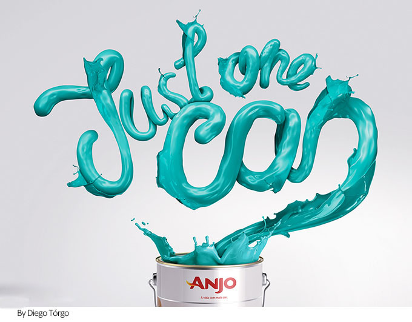

济南海右博纳品牌营销咨询有限公司
Copyright 2001-2019 All Rights Reserved Sivibrand.
王伟品牌顾问微信